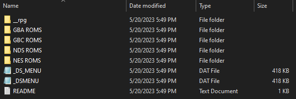

R4xMP Details
- Simple plug and play - just add your own ROM files
- Compatible with Nintendo DS, DS Lite, DSi, 2DS, and 3DS
- No timebomb - no expiration date
Download
Click the button below to download the R4xMP firmware:
Download R4xMP Firmware (Version Ace3DS+_R4iLS_Wood_R4_1.62)Tutorial: How to Get the Firmware Working
Step 1:
Download the firmware kernel from the link above.
Step 2:
Copy the downloaded zip file into the microSD card.
Step 3:
Extract the contents of the zip file directly into the microSD card.
The microSD contents should look like this as a result:

Are you facing either of these errors?
Click on the image that corresponds to the error you're facing.
Contact
If you are an R4xMP customer who purchased from my official listings on Amazon or eBay, feel free to contact me with any questions or troubleshooting needs.
Note: I can only assist customers who purchased through Amazon or eBay. Please include your order ID when contacting me.
Contact Me